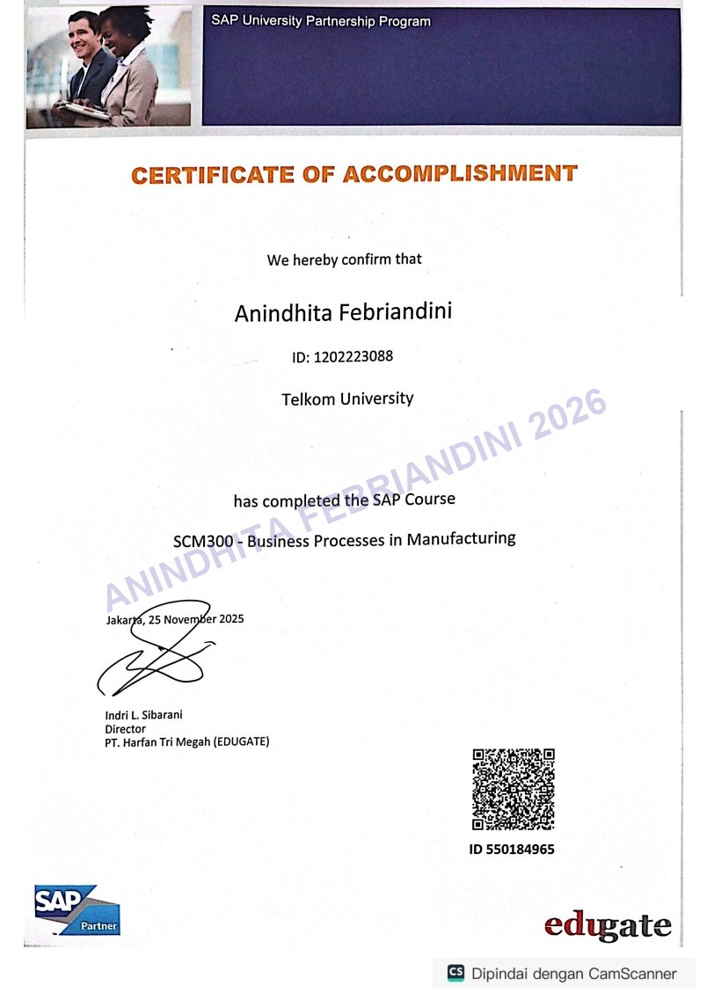

01 / TRAINING OVERVIEW
Business Processes in Manufacturing
A process-based introduction to manufacturing activities within SAP and their links with wider enterprise operations.
02 / LEARNING FOCUS
Concepts and process connections
The supplied record covers production planning and execution, material management, and integration with other modules.
03 / PRACTICAL APPLICATION
Taking the learning into practice
The learning helps connect manufacturing decisions with the materials and operational records needed to support production.
04 / CERTIFICATE
Training certificate

SKILLS & KNOWLEDGE
ManufacturingProduction PlanningMaterial Management